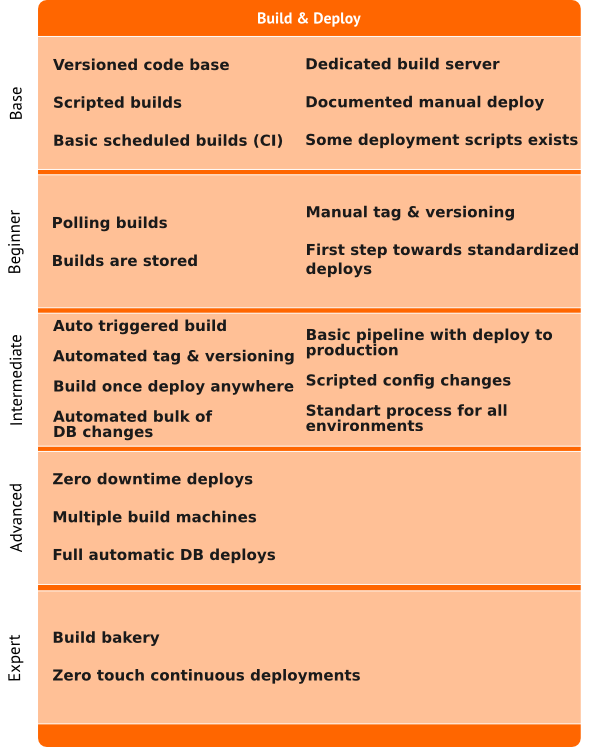
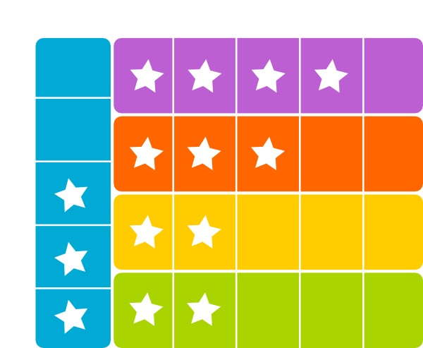

Our highest priority is to satisfy the customer through early and `continuous delivery` of valuable software.* Principles behind the Agile Manifesto #1
How long does it take you to deploy one line of code?
Long cycle times can be deadly

A robust delivery pipeline helps you to apply the agile practices and it is key to decrease time to production.
How often do you release changes?

Releasing changes frequently reduces the risk.

You can't get it by just buying a tool
so you should
ContinuouslyImprove
the Maturity
of your Continuous Delivery




Plan - Do - Act - Check
a case study from

Architecture
- 15+ web applications (Ember SPA & nodejs backend)
- 100+ microservices (Java & nodejs)
- Physical loadbalancer for prod environment
- Application loadbalancer for dev/test/uat/dr environments
- DNS round-robin for microservices
- Inmemory databases
- Relational and document oriented databases
- 6 Agent with 1000+ Configurations
- 250+ Build, 750+ Deploy Configurations
Pipeline for UI pipeline
Pipeline for microservice pipeline
The chain for microservice pipeline
- 17 Local Repository (Maven/Yum/Npm/Nuget)
- 40+ Proxy Repository to regulate Library/Software usages
a brand new approach for microservice management!

to be honest :)
have fun! ;)